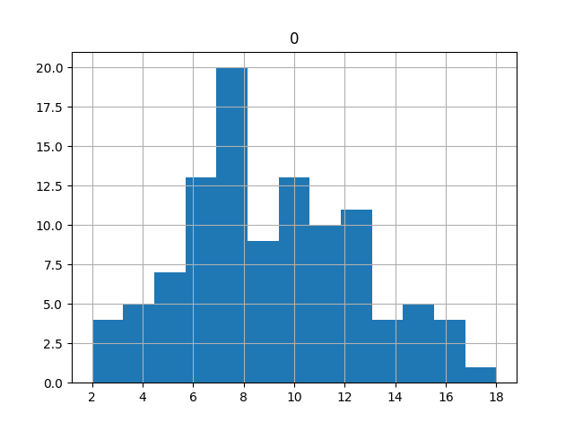

Testlere Devam
İstatistiki test yaratmak için takip edilen teknik basit; bir istatistiki ölçüt hesaplıyoruz, ya da hesabımızın başka noktasından çıkanı alıyoruz, ki bu ölçüt mesela bir ortalama olabilir bu durumda bilinen bir dağılımı vardır, ya da lineer regresyondan bize verilen bir katsayıdır, onun t değeri vardır, bu durumda da dağılımın ne olduğunu biliyoruz. Yani hangi ölçüte bakarsak bakalım, ya da biz yeni bir tanesini uyduralım, önce elde ettiğimiz rasgele değişkeninin ideal koşullarda dağılımının ne olduğuna bakarız, ki test ettiğimiz bir anlamda bu ideal koşullar olacaktır. Ardından bir kriter ortaya koyarak testi ortaya çıkartırız.
Ama ondan önce biraz regresyon.
Örnek veri olarak Big Andy's Burger Barn adında hamburger satan bir restoran zincirinin verisini kullanalım [1, sf. 168]. Veride her nokta ayrı bir şehirdeki belli bir aydaki dükkan için kaydedilmiş reklam gideri $ADVERT$, burger fiyatı $PRICE$, ve satış getirisi $SALES$ ($SALES$ ve $ADVERT$ bin dolarlık birimde kaydedilmiş). Şirket yönetimi diyelim ki reklam harcamalarının satışları nasıl etkilediğini merak ediyor. Ayrıca yönetim bir fiyatlama stratejisi belirlemek istiyor, fiyatın geliri nasıl etkilmektedir? Fiyatta düşüş çok az satış artışı yaratıyorsa bu durum kazancı düşürür, demek ki talep fiyatsal-elastik değildir (price inelastic). Tam tersi de olabilir, fiyat değişimi satışı arttırır, o zaman talep fiyatsal-elastiktir.
import pandas as pd
df = pd.read_csv('andy.dat',sep='\s*',names=['sales','price','advert'])
print df.head(3)
sales price advert
0 73.2 5.69 1.3
1 71.8 6.49 2.9
2 62.4 5.63 0.8
Regresyon modelini kuralım,
$$ SALES = \beta_1 + \beta_2 PRICE + \beta_3 ADVERT $$
import statsmodels.formula.api as smf
results = smf.ols('sales ~ price + advert', data=df).fit()
print results.summary()
OLS Regression Results
==============================================================================
Dep. Variable: sales R-squared: 0.448
Model: OLS Adj. R-squared: 0.433
Method: Least Squares F-statistic: 29.25
Date: Mon, 24 Aug 2015 Prob (F-statistic): 5.04e-10
Time: 08:59:52 Log-Likelihood: -223.87
No. Observations: 75 AIC: 453.7
Df Residuals: 72 BIC: 460.7
Df Model: 2
Covariance Type: nonrobust
==============================================================================
coef std err t P>|t| [95.0% Conf. Int.]
------------------------------------------------------------------------------
Intercept 118.9136 6.352 18.722 0.000 106.252 131.575
price -7.9079 1.096 -7.215 0.000 -10.093 -5.723
advert 1.8626 0.683 2.726 0.008 0.501 3.225
==============================================================================
Omnibus: 0.535 Durbin-Watson: 2.183
Prob(Omnibus): 0.765 Jarque-Bera (JB): 0.159
Skew: -0.072 Prob(JB): 0.924
Kurtosis: 3.174 Cond. No. 69.5
==============================================================================
Fiyatsal elastikliği kontrol etmek için $\beta_2$'nin t değerine
bakabiliriz çünkü bu değer $\beta_2=0$ hipotezini reddedip
reddedemeyeceğimiz hakkında bize bir şeyler söylüyor. Eğer t değer ve
P>|t| değeri 0.05'ten küçük ise hipotezi reddedebiliriz. Çıktıya
bakıyoruz, 0 değerini görüyoruz. Demek ki fiyatsal elastiklik vardır.
Gayrı Lineerlik: Fakat acaba reklam harcaması ile satış arasında tam lineer bir ilişki mi var? Belli bir noktadan sonra ne kadar harcarsak harcayalım daha fazla kazanamayacağımız bir durum da olamaz mı? Bunu test edelim, $ADVERT^2$ değişkenini ekleyip yeni bir regresyon yaratalım. $ADVERT$'in karesini aldık çünkü karesi alınmış $ADVERT$ normal olana göre daha hızlı büyür, yani büyük değerlerde karesinin sonucu çok daha büyüktür, ve eğer bu uç noktalarda bir kalıp var ise, onu "yakalamak" bu karesi alınmış yeni değişken sayesinde mümkün olur.
import statsmodels.formula.api as smf
df['advert2'] = df.advert**2 # kare aldik
results2 = smf.ols('sales ~ price + advert + advert2', data=df).fit()
print results2.summary()
OLS Regression Results
==============================================================================
Dep. Variable: sales R-squared: 0.508
Model: OLS Adj. R-squared: 0.487
Method: Least Squares F-statistic: 24.46
Date: Mon, 24 Aug 2015 Prob (F-statistic): 5.60e-11
Time: 15:54:13 Log-Likelihood: -219.55
No. Observations: 75 AIC: 447.1
Df Residuals: 71 BIC: 456.4
Df Model: 3
Covariance Type: nonrobust
==============================================================================
coef std err t P>|t| [95.0% Conf. Int.]
------------------------------------------------------------------------------
Intercept 109.7190 6.799 16.137 0.000 96.162 123.276
price -7.6400 1.046 -7.304 0.000 -9.726 -5.554
advert 12.1512 3.556 3.417 0.001 5.060 19.242
advert2 -2.7680 0.941 -2.943 0.004 -4.644 -0.892
==============================================================================
Omnibus: 1.004 Durbin-Watson: 2.043
Prob(Omnibus): 0.605 Jarque-Bera (JB): 0.455
Skew: -0.088 Prob(JB): 0.797
Kurtosis: 3.339 Cond. No. 101.
==============================================================================
Yeni regresyon için $R^2=0.50$! Bu yeni model verideki varyansın yüzde 50'sini açıklıyor! Eskisinden daha iyi bir model ve AIC'i de daha düşük zaten, ve $ADVERT^2$ için hesaplanan katsayı -2.768 eksi değeri taşıyor. Demek ki reklam harcamalarının belli bir noktadan sonra etkisinin aynı olmayacağı varsayımımız doğru.
Birleşik Hipotez Testleri
Ne yazık ki t testi ile ortak (joint) hipotez testleri yapamıyoruz. Mesela sadece bir değil, birkaç değişkenin model için ne kadar önemli olduğunu bilmek istiyoruz. Tabii bu değişkenleri regresyondan atabiliriz, sonra çıplak gözle AIC'e bakarız, vs. Fakat bu testi daha İstatistiksel bir hipotez testi olarak yapmak daha iyi olmaz mıydı? Alttaki test bu durumlar için kullanılır,
F Testi
Diyelim ki reklam harcamasının satışı etkileyip etkilemediğini merak ediyoruz. Fakat artık bir değil iki tane reklam ile alakalı değişkenimiz var! Biri $ADVERT$ diğeri onun karesi $ADVERT^2$. Sıfır hipotezimiz şu olacak, "reklam harcaması satışları belirlemede etkili değildir". Yani
$$ H_0: \beta_3=0, \beta_4=0 $$
$$ H_1: \beta_3 \ne 0, \textrm{ ya da } \beta_4 \ne 0 \textrm{ ya da ikisi de sıfır değil} $$
Hipotez bu şekilde tanımlanınca onu reddetmek demek reklamın satışları etkilediği hakkında güçlü bir kanıt ortaya koyar. Bu nokta önemli, aşırı fantastik bir şekilde zaten umduğumuz şeyi desteklemek için kanıt aramak yerine, onun tam tersini reddetmek için kanıt arıyoruz.
Peki bu testi nasıl yaratacağız? Bir regresyona değişken eklemek onun hatasını azaltır, çıkartmak ise çoğaltır. Eğer ana regresyondan değişken çıkartırsak onun hatası $SSE_u$ diyelim, çoğalarak $SSE_r$ olur. Notasyonel açıdan değişik bir şekilde de duruma bakabiliriz, $\beta_3=0, \beta_4=0$ şartını koşmak aslında bir modeli kısıtlamak ta (restrict) anlamına gelir, üzerinde şart belirlenmemiş olan model de kısıtlanmamış (unrestricted) olur. Neyse, F testi ile yapmaya çalışacağımız bu çoğalmanın istatistiki olarak önemli (significant) olup olmadığını anlamaktır. $SSE$ notasyonu bu arada hata karelerinin toplamı (sum of squared errors) kelimelerinden geliyor.
Şimdi, daha önce belirttiğimiz gibi, ideal şartlarda doğru olacak bir ölçüt yaratmak, ve bu ideal şartlarda bu ölçütün dağılımını bulmak, ve veriyi kullanıp bu ölçütü hesaplayıp sonucu bu dağılıma "sormak" gerekiyor. Eğer sıfır hipotezi doğru ise,
$$ F = \frac{(SSE_r - SSE_u)/j}{SSE_u/(n-k)} $$
hesabı bir $F_{j,n-k}$ dağılımıdır. F dağılımının tanımını hatırlayalım, iki chi kare dağılımının birbiriyle bölünmüş hali idi,
$$ F_{j,n-k} = \frac{\chi^2 / j}{\chi^2 / n-k} $$
SSE hesapları karelerin toplamı olduğu için ve hataların normal dağıldığı varsayımından hareketle bölüm ve bölendeki rasgele değişkenler Chi kare dağılımına sahiptir.
Peki neden üstteki F dağılımının $j,n-k$ derece serbestliği vardır? İki chi kare dağılımını toplayınca onların dereceleri toplanır. Aynı şekilde çıkartma derece eksiltir. Şimdi, $SSE_r$'nin derecesi $n-k$'dir, $k$ tane katsayı dereceyi / serbestliği azaltmıştır. Eğer $SSE_r$ elde etmek için $j$ tane katsayıyı çıkartırsak, bu durum dereceyi fazlalaştırır, yani $SSE_r$ için $n-k+j$ elde ederiz. O zaman bölümdeki çıkartmanın derecesi
$$ (n-r+j) - (n-r) = j$$
olacaktır. Şimdi nihai hesabı yapalım, regresyonu reklamla alakalı iki
değişkeni çıkartılmış şekilde bir daha işletiriz, sonra SSE hesabı için her
iki regresyondan gelen artıklar resid'leri kullanırız, onların
karelerinin toplamı bize gerekli $SSE$ hesabını verecektir,
import statsmodels.formula.api as smf
results3 = smf.ols('sales ~ price ', data=df).fit()
SSE_u = np.sum(results2.resid**2)
SSE_r = np.sum(results3.resid**2)
print 'SSE_u', SSE_u
print 'SSE_r', SSE_r
J = 2; N=len(df); K = len(results2.params)
F = (SSE_r - SSE_u)/J / SSE_u*(N-K)
print 'j,n-k',J,N-K
print 'F =', F
SSE_u 1532.0844587
SSE_r 1896.39083709
j,n-k 2 71
F = 8.44135997807
p değeri $P(F_{j,n-k}>8.44)$. Kumulatif yoğunluk fonksiyonu (CDF) kullanabilmek için formülü şu şekilde tekrar yazalım, $1-P(F_{j,n-k}<8.44)$,
import scipy.stats as st
f = st.f(J,N-K)
print 1-f.cdf(F)
0.000514159058424
Üstteki değer 0.05 kritik değerinden daha ufak olduğu için hipotez reddedilmiştir. Direk p değeri hesabı yerine yüzde 95 güven için bir eşik değeri de hesaplayabilirdik,
print f.ppf(0.95)
3.12576423681
Ve eğer F değeri bu değerden büyük ise hipotez reddedilmiştir diyebilirdik, ki hesapladığımız F değeri eşik değerinden büyük idi. Vardığımız sonuç reklam harcamalarının satış için önemli olduğudur.
Daha Basit bir F-Test Örneği
F-Test'in ana fonksiyonu ve ilk kullanımı varyans karşılaştırmak aslında, iki ölçüm grubunu standard sapma karesinin oranı alınır, ve sonuç bir F rasgele değişkenidir, belli serbestlik dereceleri vardır,
$$ F = \frac{S_x^2}{S_y^2} $$
ki $S_x,S_y$ 1. ve 2. grubun örneklem standart sapmasıdır. Bu şekilde bir örnek te görelim [2, sf. 42]. Diyelim ki elimizde göz hareketlerini ölçen iki metod var, gözümüzü 20 derece hareket ettirince metotlar şu rakamları veriyor,
method_1 = [20.7, 20.3,20.3, 20.3, 20.7, 19.9, 19.9, 19.9, \
20.3, 20.3, 19.7, 20.3]
method_2 = [19.7, 19.4, 20.1, 18.6, 18.8, 20.2, 18.7, 19.]
F-testini kullanarak bu metotların, ölçümlerin doğruluğunun (accuracy) aynı mı, yoksa birinin diğerinden daha doğru mu olduğunu bulacağız.
import pandas as pd
m1 = np.array(method_1); m2 = np.array(method_2)
df = pd.DataFrame([m1,m2]).T
ss = df.std()
F = ss.ix[0]**2/ss.ix[1]**2
print F
0.243934673841
import scipy.stats as st
f = st.f(len(m1)-1,len(m2)-1)
print 1-f.cdf(F)
0.981334830069
F dağılımı $n-1$ ve $m-1$ serbestlik derecesine sahip. Üstteki $p$ değeri 0.05'ten küçük değildir, demek ki iki metotun ölçüm doğruluğunun aynı olduğu hipotezini reddedemiyoruz. Not: Örneklem standart sapma hesabı için $n-1$'e bölünme durumu var, bu bölüm kullanılan $F$'in derecesine yansıyor tabii.
Testin özünde şu var, ki varyansın eşitsizliği oranın 1'den ne kadar uzak olduğuna bağlı. Ama ne kadar uzak istatistiki olarak önemli bir uzaklık? İşte bunun cevabını F-dağılımı veriyor.
Örneklem Korelasyonu
Korelasyon $\rho$'yu daha önce gördük, tahmin edicisi $r$'dir,
$$ \hat{\rho} = r = \frac{S_{xy}}{\sqrt{S_{xx}S_{yy}}} \qquad (1) $$
ki örneklem hesapları $S_{xx},S_{xy},S_{yy}$
$$ S_{xx} = \sum_{i=1}^{n} (x_i-\bar{x})^2 $$
$$ S_{xy} = \sum_{i=1}^{n} (x_i-\bar{x})(y_i-\bar{y}) $$
$$ S_{yy} = \sum_{i=1}^{n} (y_i-\bar{y})^2 $$
olsun; bu hesapların teorik varyans ile olan bağlantısı görülebilir. Eğer $X,Y$ iki değişkenli (bivariate) bir normal dağılımından geliyorsa, o zaman ortada bir regresyon varmış gibi gösterebiliriz
$$ E(Y|X=x) = \beta_0 + \beta_1 x + \epsilon $$
ki $\beta_1 = \sigma_Y / \sigma_X \cdot \rho$ olur. Detaylar için [4]. Soru şu, $r$ için bir istatistiksel önemlilik (significance) hesabı nasıl yapardık? Yani, eğer $-1 \le r \le 1$ işe, ve $r=0$ hiç korelasyon olmama durumu ise, acaba bu "sıfır olmama" durumunu test edebilir miydim? Evet. Yukarıdaki normallik faraziyesi doğru ise $\beta_1 = 0$ olmama durumunu test etmek $\rho = 0$ olmama testi ile aynı, bu durumda
$$ t_0 = \frac{\hat{\beta_1}}{\sqrt{ Var(\hat{\beta_1} ) }} $$
gibi bir test istatistiği yaratırız, ki bu istatistik Öğrenci t dağılımına sahip olurdu çünkü sıfır hipotezi $\hat{\beta_1} = 0$, ve üstteki istatistik sıfır hipotezi altında ile Öğrenci t dağılımına sahip olmak zorundadır, çünkü bölünen normal dağılmış, bölen chi karenin karekökü olarak dağılmış. Eğer $t_o$ hesabı veriye uygulandıktan sonra hipotezin öngördüğü dağılıma uymaz ise, sıfır hipotezini reddederiz.
Bu noktada lineer regresyon ile alakalı bilgiler devreye sokulabilir, [4]'den biliyoruz ki
$$ Var(\hat{\beta_1}) = \frac{\sigma^2}{S_{xx}} $$
$\sigma$ yerine örneklemden gelen $S$ kullanırsak ve üstteki formüle koyarsak,
$$ t_0 = \frac{\hat{\beta_1}}{\sqrt{S / S_{xx}}} $$
Bu ifadeyi $r$ bazında ifade edebilir miyiz? Deneyelim, $\hat{\beta_1} = S_{xy} / S_{xx}$ ve $r = \hat{\beta_1}\sqrt{\frac{S_{xx}}{S_{yy}}}$ olduğunu biliyoruz [4], ayrıca
$$ S = \frac{SSE}{n-2}, \qquad SSE = S_{yy} - \hat{\beta_1} S_{xy} $$
ki $SSE$ hata karelerinin toplamıdır (sum of squared errors),
$$ t_0 = \frac{ \sqrt{S_{xx}} \hat{\beta_1} \sqrt{n-2} }{\sqrt{SSE}} $$
$$ = \frac{ \sqrt{S_{xx}} \hat{\beta_1} \sqrt{n-2} }{\sqrt{S_{yy} - \hat{\beta_1} S_{xy}}} $$
Bölümün iki kısmını $\sqrt{S_y}$ ile bölelim,
$$ = \frac{ \sqrt{S_{xx}/S_{yy}} \hat{\beta_1} \sqrt{n-2} } {\sqrt{1 - \hat{\beta_1} S_{xy}/S_{yy}}} $$
Bölünen kısmında bir $r$ ortaya çıktı,
$$ = \frac{ r\sqrt{n-2} } {\sqrt{1 - \hat{\beta_1} S_{xy}/S_{yy}}} $$
Bölen kısmındaki $\hat{\beta_1}$ yerine $\hat{\beta_1} = S_{xy} / S_{xx}$ koyarsak yine (1)'deki $r$ tanımına geliriz, ve alttaki basitleştirilmiş ifade ortaya çıkar,
$$ t_o = \sqrt{\frac{(n-2)r^2}{(1-r^2)}} $$
Bu istatistik $n-2$ derece serbestliğe sahip bir Öğrenci t dağılımıdır.
Örnek
Possum adı verilen bir tür hayvanın dişilerinin tüm uzunluğu ve kafa ölçümü
totlngth,hdlngth değişkenleri arasında korelasyon olup olmadığı
merak edilmektedir.
import pandas as pd
import scipy.stats
def p_corr(df1, df2):
corr = df1.corr(df2)
N = np.sum(df1.notnull())
t = corr*np.sqrt((N-2)/(1-corr**2))
p = 1-scipy.stats.t.cdf(abs(t),N-2) # one-tailed
return corr, t, p
df = pd.read_csv('fossum.csv')
c,tval, pval = p_corr(df.totlngth,df.hdlngth)
print c, pval
0.779239322172 3.75045772216e-10
p-değeri çok küçük, demek ki korelason olmadığı tezi reddedildi. Korelasyon var.
Pearson Chi Kare Uyum Derecesi (Goodness-of-Fit) Testi
Her sene günde kaç saat çalıştığımızı bir yere yazdık diyelim, elde 365 veri noktası var. Ertesi sene yine aynı veriyi topladık, şu soruyu soruyoruz, iki veri birbirinden istatistiki olarak farklı mıdır? Ya da; elimizdeki belli bir veri var, ve o verinin normal mi, ya da üstel (exponential) dağılımdan mı geldiğini merak ediyoruz. Acaba veri istatistiki olarak hangi tip dağılım fonksiyona (yani teorik yoğunluk fonksiyonuna) daha yakındır? Ya da; eldeki bir verinin $\mu = 0$ merkezli normal dağılımdan mı, yoksa $\mu = 30$ merkezli normal dağılımdan mı geldiğini merak ediyoruz.
Her üç sorunun ve benzerlerinin cevabı Pearson'un chi kare (chi square) uyum derece testi ile verilebilir.
İki veriyi karşılaştırdığımız durumda bu iki veri kümesini dağılım olarak kabul edip, birini diğerine uyum açısından test edebiliriz. Bu karşılaştırma her iki tarafta histogram alınıp histogram kutucuklarının (bins) içine her iki tarafta düşen miktarların bir test istatistiği üzerinden karşılaştırılması ile olabilir. Veri ile yoğunluk karşılaştırdığımızda ise veriyi histogram kutucukları, yoğunluğu ise aynı aralıklara düşen olasılıkların fonksiyonel hesaplarıyla karşılaştırılması ile yaparız.
Test istatistiği
Diyelim ki her kutucukta görülen miktar $N_i$, ki $N_1 + N_2 + .. + N_k = n$, ve karşılaştırmak istediğimiz, bu miktara tekabül eden "ideal" olasılık $p_i$, o zaman ideal miktar $n p_i$. Kutucuktaki sayıları bir binom dağılımından geliyormuş gibi modelleyebiliriz, 1. kutucuk için mesela $N_1 \sim Bin(n,p_1)$, ve $N_1$ rasgele değişkeni $N$ tane deneyde "başarılı" olan sayı - tipik binom kullanımı. Bu durumda Pearson uyum derecesi istatistiği
$$ \chi^2 = \sum_{j=1}^{k} \frac{(N_j - np_j)^2}{np_j} $$
ile belirtilir, üstteki toplamın yaklaşıksal olarak $\chi^2_{k-1}$ dağılımına yaklaştığı ispatlanmıştır. Detaylar için [5, sf 318, 6]. Nihai ispat oldukça çetrefil, biz burada alternatif bazı yaklaşıksal ispatlardan bahsetmek istiyoruz (okkalı ispat için yukarıdaki referanslar geçerli tabii).
Eğer her $N_j$ binom dağılımını Gaussian ile yaklaşıkladığımızı düşünürsek, ki bu yeterince büyük $n$, ve $np_i>5$ için mümkün, bu dağılım $\mu=np_j$ ve varyans $np_j(1-p_j)$'ye sahip olur, o zaman Gaussian'ı standardize etmek için
$$ \frac{N_j-np_j}{\sqrt{np_j(1-p_j)}} \approx N(0,1) $$
$Z=N(0,1)$ diyelim,
$$ \frac{(N_j - np_j)}{\sqrt{np_j} } \approx \sqrt{(1-p_j)}Z $$
İki tarafın karesini alalım, ve her $j$ üzerinden toplam alalım,
$$ \sum_j \frac{(N_j - np_j)^2}{np_j} \approx \sum_j (1-p_j)Z^2 $$
Üstteki eşitliğin sol tarafı Pearson istatistiğiyle aynı. Sağ tarafı neye eşit?
$$ \sum_j (1-p_j)Z^2 = (1-p_1)Z^2 + (1-p_2)Z^2 + ... + (1-p_k)Z^2 $$
$$ = Z^2 [(1-p_1) + (1-p_2) + ... + (1-p_k)] $$
$$ = Z^2 [k - (p_1+p_2+..+p_k))] = (k-1)Z^2 = \sum_{k-1} Z^2 $$
Şimdi, bu eriştiğimiz toplamın $\chi^2_{k-1}$ dağılımı, yani $k-1$ derece serbestliği olan bir chi kare dağılımı olduğunu iddia edebilir miyiz? Eğer $Z_j$'ler birbirinden bağımsız ise kesinlikle evet, çünkü standart normal rasgele değişkenlerin toplamı chi kare dağılımını verir. Üstteki kolay ispatın önündeki tek engel budur, bizim burada yapacağımız yaklaşıksal argüman $i,j$ ikilisi için $Z$'lerin bağlantısının, kovaryansının küçük olduğudur, ki bu küçüklük sebebiyle $Z_j$'ler çoğu durumda bağımsız kabul edilebilir.
Diyelim ki $X_1,X_2,..$ değişkenleri bağımsız ve $Mult(1,p)$, yani multinom dağılımdan geliyorlar [7, sf. 180], ve $p = \left[\begin{array}{ccc} p_1 & p_2 & \dots \end{array}\right]$, ve $\sum_j p_j = 1$. Yani her $X_i$ zar attığında $1 \times k$ boyutlu bir vektör ortaya çıkıyor, bu vektörün sadece bir hücresi 1 diğerleri 0. Multinom dağılımların tanımından biliyoruz ki $Cov(X_i,X_j) = -n p_ip_j = -p_ip_j$ (çünkü $n=1$).
Bu demektir ki 1'den küçük iki değer çarpılıyor bu daha da küçük bir değer verecektir. Eğer $k$ yeterince büyük ise, bu, mesela sürekli yoğunlukları ayrıksal olarak gösterdiğimiz durumda ve yeterince çok kutucuk var ise bu kutucuklara "düşen" olasılıkların ufalması demektir, ve ufak değerlerin çarpımı iyice ufalır, ki bu kovaryansı sıfıra yaklaştırır. Yani yeterince büyük $k$ için $i,j$ bağlantısını sezgisel bağlamda etkisiz olduğunu görebiliriz. Tabii, toplamın kesinlikle chi kare olduğunun ispatı için dediğimiz gibi verdiğimiz referanslara bakılabilir.
İstatistiki testlerin mantığını hatırlarsak, tarif edilen Pearson istatistiği sıfır hipotezi. Bize reddetmeye uğraşacağımız bir dağılım / hesap ikilisi üretiyor. Eğer hesap beklenen, normal (sıfır hipotez durumu) uymuyorsa, hipotezi reddediyoruz. Ret durumu özellikle seçiliyor çünkü kabul edilmezlik daha kesin bir cevap.
Örnek
Bir paralı otoyolunda geçiş noktasında durulmuş ve her dakika gelen araç sayılmış, ve dakika başına bu araç sayısı yazılmış. Bu deney 106 dakika süresince yapılmış (elde 106 satırlı bir veri var yani). Bu veri için Poisson dağılımının uygun olup olmadığını yüzde 5 önemlilik seviyesinde ispatlamamız isteniyor.
import pandas as pd
vehicle = [2, 3, 3, 3, 4, 4, 4, 4, 4, 5, 5, 5, 5, 5, 5, 5, 6,\
6, 6, 6, 6, 6, 6, 6, 6, 6, 6, 6, 6, 7, 7, 7, 7, 7, 7, 7,\
7, 7, 7, 7, 7, 8, 8, 8, 8, 8, 8, 8, 8, 9, 9, 9, 9, 9, 9, 9,
9, 9, 10, 10, 10, 10, 10, 10, 10, 10, 10, 10, 10, 10, 10, \
11, 11, 11, 11, 11, 11, 11, 11, 11, 11, 12, 12, 12, 12, \
12, 13, 13, 13, 13, 13, 13, 14, 14, 14, 14, 15, 15, 15, 15,\
15, 16, 16, 16, 16, 18]
df = pd.DataFrame(vehicle)
Verinin histogramına bakalım,
f = plt.figure(); df.hist(bins=13)
plt.savefig('stat_tests2_01.png')

Poisson dağılımı muhtemel gözüküyor. Ama şimdi bunu uyum derece testi ile daha kararlı şekilde göstermeye uğraşacağız. Verideki sayımları o sayım rakamı bazında gruplayalıp gösterelim,
kt = plt.hist(np.array(df),bins=range(20))
kt = pd.DataFrame([kt[1],kt[0]]).T
kt = kt[:-1] # sonuncu satiri at
kt.columns = ['kac araba','kac kere']
print (kt)
kac araba kac kere
0 0.0 0.0
1 1.0 0.0
2 2.0 1.0
3 3.0 3.0
4 4.0 5.0
5 5.0 7.0
6 6.0 13.0
7 7.0 12.0
8 8.0 8.0
9 9.0 9.0
10 10.0 13.0
11 11.0 10.0
12 12.0 5.0
13 13.0 6.0
14 14.0 4.0
15 15.0 5.0
16 16.0 4.0
17 17.0 0.0
18 18.0 1.0
Yani bir dakikada 6 araba sayımı 13 kere yapılmış (13 değişik dakikada).
Not: Üstte bir kütüphane çağrısı hist kullandık (grafikleme kısmını
kullanmadan), ama Poisson frekans hesabı elle çok kolay yapılabilir.
Eğer üstteki verinin bir Poisson dağılımdan geldiğini kabul ediyorsak, Poisson'un parametresi $\lambda$'yi veriden hesaplamak için ortalama almak yeterlidir,
lam = np.mean(kt['kac kere'])
print ('lambda %0.2f' % lam)
lambda 5.58
Bu Poisson'u kullanarak bazı olasılık hesapları hemen yapabilirdik, mesela 3'ten fazla, 9'dan fazla araba sayılma ihtimali nedir?
from scipy.stats import poisson
print (1-poisson.cdf(3, lam))
print (1-poisson.cdf(9, lam))
0.807087823822676
0.057975438622207665
Devam edelim. Veride bazı kutucukların boş olduğunu görüyoruz, bu durum özellikle tek tepeli (unimodel) dağılımlı verilerde etekleri temsil eden uçlardaki kutucukların boş olması sonucunu verebilir. Bu durumda o kutucukların verisi daha dolu olanlara aktarabilmek için kutucuk noktalarını tekrar tanımlıyoruz,
bins = [0] + range(5,15) + [100]
kt2 = plt.hist(np.array(df),bins=bins)
kt2 = pd.DataFrame([kt2[1],kt2[0]]).T
kt2.columns = ['int_low','n_i']
print kt2
int_low n_i
0 0 9
1 5 7
2 6 13
3 7 12
4 8 8
5 9 9
6 10 13
7 11 10
8 12 5
9 13 6
10 14 14
11 100 NaN
Şimdi bu değerler üzerinden Pearson $\chi^2$ hesabını yapalım. Ama ondan önce, hatırlayalım, bu verinin herhangi bir Poisson'dan gelip gelmediğini kontrol ediyoruz, ama testimiz için parametresi belli olan, özel bir Poisson lazım, bunun için bize bir $\lambda$ gerekiyor. Önemli değil, $\lambda$'nin tahmin edicisi $\hat{\lambda}$'yi biliyoruz,
$$ \hat{\lambda} = \frac{1}{n} \sum_{j=1}^{n}x_j $$
Bu $\hat{\lambda}$'yi kullanarak Poisson hesaplarını yapabiliriz artık. Bir
kutucuğa düşen Poisson olasılığının hesabı $P(a \le X < b)$, ki bu basit
bir $F(b)-F(a)$, yani $a,b$ noktalarındaki kümülatif yoğunluk fonksiyonun
farkı üzerinden hesaplanabilir, altta kullanılan çağrı poisson.cdf.
from scipy.stats import poisson
kt2['int_high'] = kt2.shift(-1).int_low
lam = df.mean() # tahmin edici
def f(x):
high = poisson.cdf(x.int_high-1,lam)
low = poisson.cdf(x.int_low-1,lam)
return pd.Series(high-low)
kt2['p_i'] = kt2.apply(f,axis=1)
kt2['np_i'] = len(df) * kt2['p_i']
kt2['chi'] = (kt2['n_i']-kt2['np_i'])**2 / kt2['np_i']
kt2 = kt2[:-1]
print kt2
print '\nchi kare istatistigi', kt2.chi.sum()
int_low n_i int_high p_i np_i chi
0 0 9 5 0.051863 5.497487 2.231492
1 5 7 6 0.058217 6.171048 0.111352
2 6 13 7 0.088242 9.353602 1.421508
3 7 12 8 0.114643 12.152118 0.001904
4 8 8 9 0.130325 13.814437 2.447271
5 9 9 10 0.131691 13.959242 1.761849
6 10 13 11 0.119764 12.695009 0.007327
7 11 10 12 0.099016 10.495702 0.023412
8 12 5 13 0.075040 7.954290 1.097248
9 13 6 14 0.052496 5.564539 0.034078
10 14 14 100 0.078703 8.342527 3.836608
chi kare istatistigi 12.9740502104
Şimdi üstteki değerin istatistiki önem taşıyıp taşımadığını anlamaya geldi sıra. Eşik değerimiz $\chi^2_{9,0.05}$ olacak. Peki niye serbestlik derecesi 9 alındı? Elde kaç tane kutucuk var?
print len(kt2), 'kutucuk'
11 kutucuk
11-1=0 niye olmadı, -1 ile serbestlik derecesi hesaplamıyor muyduk? Evet. Fakat bir kavis daha var, tahmin edici ile $\lambda$'yi hesaplayınca 1 serbestlik derecesi daha kaybettik! $\chi_2$ ile çalışırken hatırlanması gereken bilgilerden biri bu. Pearson bu testi keşfettiğinde aslında bu eksiltmeye gerek görmüyordu, daha sonraları Fisher adlı istatistikçi bunun gerekli olduğunu ispatladı.
from scipy.stats import chi2
dof = len(kt2)-1-1 # lambda tahmini 1 derece kaybettirdi
print 'serbestlik derecesi', dof
print 'chi kare', chi2.ppf(0.95,dof)
serbestlik derecesi 9
chi kare 16.9189776046
Hesaplanan değer üstteki değerden küçük olduğu için Poisson hipotezi kabul edilmiştir (ya da olmadığı reddedilememiştir, eğer p-değeri hesaplasaydık, 0.05'den az sonuca bakacaktık, aynı şey).
Örnek
Gördüğümüz gibi bir dağılım varlığlığını test için o dağılımın analitik yoğunluk fonksiyonunu veriden gelen tahmin ediciler üzerinden tanımlayıp, veriyi bu fonksiyon ile üretmeyi deneyebiliriz, ve bu sonuç ile veri arasında uyumluluğa bakabiliriz.
Mesela olayların coğrafi olarak dağılımına bakalım.. Bu tür olayları nasıl modelleriz? Olaylar depremler, yangınlar, ya da bir savaşta bir alana atılan bombalar olabilir, ve bu tür sayılar Poisson dağılımı ile modellenir. Bu dağılım ilk bölümde gördüğümüz gibi,
$$ f(x) = P(X=x) = e^{-\lambda}\frac{\lambda^{x}}{x!} $$
olay sayısı $x=1$, $x=2$, vs.. olacak şekilde, ki önceden tanımlı belli bir zaman aralığında $x$ tane olayın olma olasılığını bu yoğunluk veriyor. Coğrafi olay sayılarını ölçmek için biraz farklı düşünmek gerekiyor, mesela 2'inci Dünya Savaşı sırasında Almanların Londra'ya attıkları bombaları düşünelim, analizi [13]'te var; Merak edilen şuydu, acaba bombalar belli bir yerde kümeleniyor muydu (clustering)? Cevap önemli olabilirdi, belki özel bir yer vurulmak isteniyordu? Analizde olayların doğal oluş sayısını modelleyen Poisson varlığı ispatlanırsa, kümelenme hipotezi reddedilmiş olacaktı. İstatistikçi Clarke Londra'yı 536 tane ızgaraya böldü, ve her öğe içine düşen bombaları saydı. Bu bittikten sonra 1 tane bomba, 2 tane bomba, vs.. şeklinde olan hücrelerin sayısını aldı, ki yoğunluğa $x$ ile geçilecek olan bu sayıydı.
Sonra Clarke yoğunluğu $\lambda$ tahmin edici hücre sayısı bölü bomba sayısı üzerinden tanımladı, ve bu yoğunluktan tüm sayılar için bir tahmini bomba sayısı ürettirdi, sonuçları gerçek bomba sayıları ile karşılaştırdı.
N = 576.
lam = 537/N
d = N*np.exp(-lam)
probs = [d*1, d*lam, d*lam**2/2, d*(lam**3)/(3*2), d*(lam**4)/(4*3*2)]
list(map(lambda x: np.round(x,2), probs))
Out[1]: [226.74, 211.39, 98.54, 30.62, 7.14]
Gerçek sayılar 229, 211, 93, 35, 7, .. idi, görüldüğü gibi oldukca yakın sayılar. Bir adım daha atılıp bunun üzerinde bir istatistik testi uygulanınca Poisson varlığı, ve dolaylı olarak kümelemenin olmadığı ispatlanmış oldu.
Kaynaklar
[1] Hill, Principles of Econometrics
[2] Uriel, Introduction to Econometrics, Lecture
[3] Haslwanter, Introduction to Statistics Using Python
[4] Wackerly, Mathematical Statistics, 7th Edition
[5] Soong, Fundamentals of Probability and Statistics for Engineers
[6] OCW MIT, Statistics for Applications, 18.443
[7] Hunter, Asymptotics for Statisticians
[8] Steiger, Correlation and Regresion, Lecture Notes
[9] Sheppard, Introduction to Python for Econometrics
[10] Greene, Econometric Analysis
[11] Uriel, Introduction to Econometrics
[12] Bayramlı, İstatistik, Gayri Lineer Regresyon, Petrol Tepe Noktası
[13] Clarke, An application of the Poisson distribution, https://www.actuaries.org.uk/system/files/documents/pdf/0481.pdf